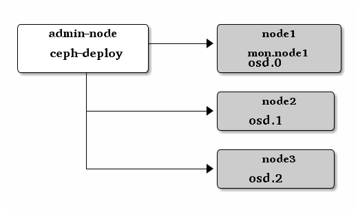
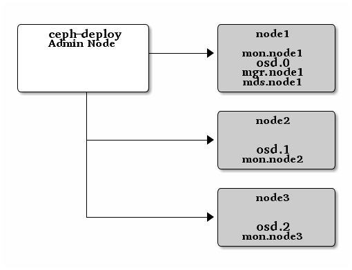

存储集群入门¶
如果你还没完成飞前检查，先做完。本篇入门用
ceph-deploy 从管理节点配置一个 Ceph 存储集群，创建了一个三节点的集群，以此发掘 Ceph 功能。

第一次练习时，我们创建一个 Ceph 存储集群，它有一个监视器、三个
OSD 守护进程。一旦集群达到 active + clean 状态，再扩展它：增加第四个 OSD 、增加元数据服务器、和两个 Ceph 监视器。为获得最佳体验，先在管理节点上创建一个目录，用于保存 ceph-deploy
生成的配置文件和密钥对。
mkdir my-cluster
cd my-cluster
ceph-deploy 会把文件输出到当前目录，所以执行的时候要先进入此目录。
Important
不要用 sudo 或在另一普通用户下以 root
身份运行 ceph-deploy ，因为它不能在远程主机上调用
sudo ，而 root 权限又是必需的。
从头开始¶
如果在某些地方碰到麻烦，想从头再来，可以用下列命令清除 Ceph 软件包，并擦除所有数据和配置：
ceph-deploy purge {ceph-node} [{ceph-node}]
ceph-deploy purgedata {ceph-node} [{ceph-node}]
ceph-deploy forgetkeys
rm ceph.*
如果执行了 purge ，你必须重新安装 Ceph 。最后的 rm
命令会删除之前 ceph-deploy 安装时写下的所有本地文件。
创建一集群¶
在管理节点上，进入刚创建的放置配置文件的目录，用
ceph-deploy 执行如下步骤。
创建集群。
ceph-deploy new {initial-monitor-node(s)}
用主机名、 FQDN 或 hostname:fqdn 做节点名，例如：
ceph-deploy new node1
用
ls和cat检查ceph-deploy的输出，应该有新集群的一个 Ceph 配置文件（ceph.conf）、一个监视器密钥环（ceph.mon.keyring）、和一个日志文件。详情见 ceph-deploy new -h 。如果你有多个网卡，可以把
public network写入 Ceph 配置文件的[global]段下。详情见网络配置参考。public network = {ip-address}/{bits}
例如：
public network = 10.1.2.0/24
使用 10.1.2.0/24 （或 10.1.2.0/255.255.255.0 ）网段内的 IP 地址。
如果你要在 IPv6 环境中部署，把下面的写入本地目录里的
ceph.conf：echo ms bind ipv6 = true >> ceph.conf
安装 Ceph 软件包。
ceph-deploy install {ceph-node} [...]
例如：
ceph-deploy install node1 node2 node3
ceph-deploy会在各节点安装 Ceph 。配置初始监视器、并收集所有密钥：
ceph-deploy mon create-initial
完成上述操作后，当前目录里应该会出现这些密钥环：
ceph.client.admin.keyringceph.bootstrap-mgr.keyringceph.bootstrap-osd.keyringceph.bootstrap-mds.keyringceph.bootstrap-rgw.keyringceph.bootstrap-rbd.keyringceph.bootstrap-rbd-mirror.keyring
Note
如果这里失败了，提示消息类似 “Unable to find /etc/ceph/ceph.client.admin.keyring” ，需核实 ceph.conf 里的监视器节点的 IP 地址，应该是公网 IP 而非私网 IP 。
用
ceph-deploy把配置文件和 admin 密钥拷贝到管理节点、和各 Ceph 节点，这样你每次执行 Ceph 命令行时就无需指定监视器地址和ceph.client.admin.keyring了。ceph-deploy admin {ceph-node(s)}
例如：
ceph-deploy admin node1 node2 node3
部署一个管理器守护进程（ luminous 12.x 及其以上版本必须有）：
ceph-deploy mgr create node1
添加三个 OSD 。为符合下列命令，我们假设各节点上都有一个未使用的磁盘名为
/dev/vdb。请确保这些设备当前没在使用，且其内没有重要数据。ceph-deploy osd create --data {device} {ceph-node}
例如：
ceph-deploy osd create --data /dev/vdb node1 ceph-deploy osd create --data /dev/vdb node2 ceph-deploy osd create --data /dev/vdb node3
Note
如果你在 LVM 卷上创建 OSD ，那么
--data的参数必须是volume_group/lv_name格式，而不是逻辑卷的路径。检查集群健康状况。
ssh node1 sudo ceph health
集群应该会显示
HEALTH_OK。更完整的集群状态可以用：ssh node1 sudo ceph -s
运营集群¶
用 ceph-deploy 部署完成后它会自动启动集群。要在 Debian/Ubuntu 发行版下操作集群守护进程，参见用 upstart 控制 Ceph ；要在 CentOS 、 Red Hat 、 Fedora 和 SLES 下操作集群守护进程，参见通过 sysvinit 机制运行 Ceph 。
关于互联和集群健康状况请参见监控集群；关于 OSD 守护进程和归置组健康状况参见监控 OSD 和归置组；关于用户管理请参见用户管理。
Ceph 集群部署完成后，你可以尝试一下管理功能、 rados 对象存储命令，之后可以继续快速入门手册，了解 Ceph 块设备、 Ceph 文件系统和 Ceph 对象网关。
扩展集群（扩容）¶
一个基本的集群启动并开始运行后，下一步就是扩展集群。在
node1 上添加一个元数据服务器；然后分别在 node2 和
node3 上添加 Ceph 监视器和 Ceph 管理器，以提高可靠性和可用性。

添加元数据服务器¶
至少有一个元数据服务器才能使用 CephFS ，执行下列命令创建元数据服务器：
ceph-deploy mds create {ceph-node}
例如：
ceph-deploy mds create node1
添加监视器¶
Ceph 存储集群需要至少一个 Ceph 监视器和 Ceph 管理器才能运行。为达到高可用性，典型的 Ceph 存储集群都需要运行多个监视器，这样在单个监视器失败时不会导致 Ceph 存储集群宕机。它用 Paxos 算法，此算法要求有过半监视器（即大于 N/2 ， N 是监视器数量 ）才能形成法定人数。最好是奇数个监视器，虽然没强调。
新增两个监视器到集群：
ceph-deploy mon add {ceph-nodes}
例如：
ceph-deploy mon add node2 node3
新增监视器后，它会自动开始同步、并形成法定人数。你可以用下面的命令检查法定人数状态：
ceph quorum_status --format json-pretty
Tip
当你的 Ceph 集群运行着多个监视器时，各监视器主机上都应该配置 NTP ，而且要确保这些监视器位于 NTP 服务的同一级。
添加管理器¶
Ceph 管理器守护进程以活跃/备用模式运作。多部署几个管理器守护进程可确保在一个守护进程或主机失效时，另一个可以即时接管而不中断服务。
用下列命令部署额外管理器守护进程：
ceph-deploy mgr create node2 node3
下列命令的输出里应该可以看到备用管理器了：
ssh node1 sudo ceph -s
存入/检出对象数据¶
要把对象存入 Ceph 存储集群，客户端必须做到：
指定对象名
指定存储池
Ceph 客户端检出最新的集群运行图，客户端用 CRUSH 算法动态地计算出如何把对象映射到归置组、然后计算如何把归置组分配到 OSD 。要定位对象，只需要对象名和存储池名字即可，例如：
ceph osd map {poolname} {object-name}
练习：定位某个对象
作为练习，我们先创建一个对象，用 rados put 命令加上对象名、一个有数据的测试文件路径、并指定存储池。例如：
echo {Test-data} > testfile.txt
ceph osd pool create mytest 8
rados put {object-name} {file-path} --pool=mytest
rados put test-object-1 testfile.txt --pool=mytest
为确认 Ceph 存储集群存储了此对象，这样确认：
rados -p mytest ls
现在，定位对象：
ceph osd map {pool-name} {object-name}
ceph osd map mytest test-object-1
Ceph 应该会输出对象位置，例如：
osdmap e537 pool 'mytest' (1) object 'test-object-1' -> pg 1.d1743484 (1.4) -> up [1,0] acting [1,0]
rados rm 可删除此测试对象。
例如：
rados rm test-object-1 --pool=mytest
删除存储池 mytest ：
ceph osd pool rm mytest
（为安全起见，你需要额外加上提示的参数才能删掉存储池。删除存储池会销毁数据。）
随着集群的运行，对象位置可能会动态改变。 Ceph 动态均衡机制的好处之一是，把你从数据迁移和手动均衡中解放出来。